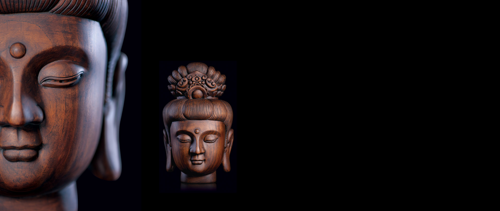
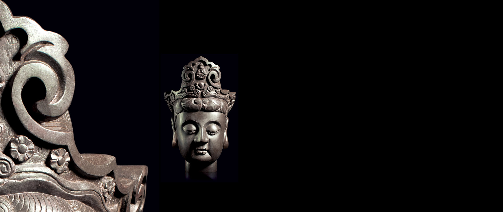
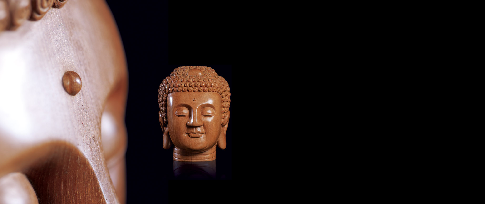
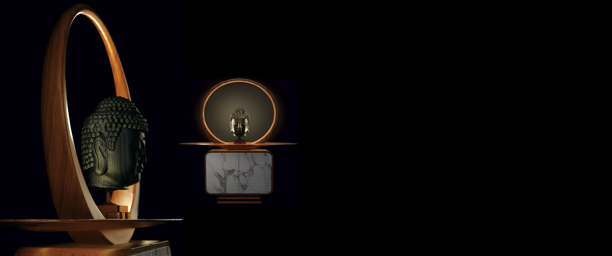
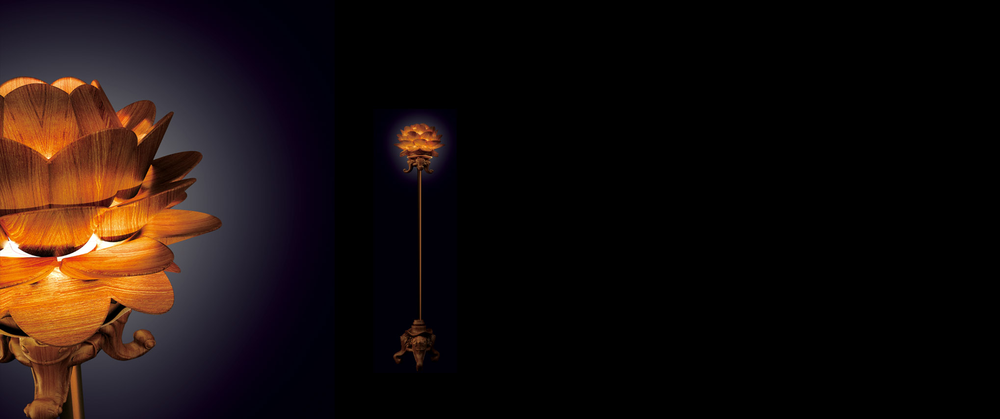

佛香
-

[Mañjuśrī Bodhisattva]
Mañjuśrī Bodhisattva, from Brahman family, born from the right side of his mother, he could speak when he was just born and is named Mañjuśrī, meaning the ¡°Gentle Voiced One.¡± Holding a flaming sword, green lotus and ¡°Prajñāpāramitā sutra¡±, riding on a blue lion, it stands for wisdom, pureness and valiancy. This head statue of Mañjuśrī Bodhisattva has only one topknot which is different from those with five or eight topknots. The statue is carved with a single piece of rare wood. With a flower crown on his head and towering topknot, prominent Buddha light between his eyebrows, he shows a full and round face and peaceful and serene expression.Size W×D×H（mm）
370×250×250
Material
Teak Rosewood
-

[Mahāsthāmaprāpta Bodhisattva]
The facial contour and hairstyle is originated from the Arya Avalokiteshvara statue of the Zhengde Period in the Ming Dynasty. Topped with trefoil moir¨¦ crown with Nirmāna-buddha in the middle, the overall sculpture is full and rich, with serene expression. It is applied with teakwood beeswax surface treatment. The whole piece shows primitive simplicity and magnificent luster.Size W×D×H（mm）
370×250×250
Material
Teak Rosewood
-

[Śākyamuni Buddha]
Śākyamuni Buddha, old name Siddhartha Gautama, from Shakya clan of ancient India, was the founder of Buddhism. In Sanskrit ¡°muni¡± means ¡°Still and Silent¡±. ¡°Still¡± means motionless; ¡°silent¡± means no talking and no thinking. This Chinese-style Buddha statue is the handcrafts of Myanmar teak of 150 years old. It has broad forehead and round face, with elongated earlobes. The ushnisa rises from the crown of Buddha¡¯s curl-covered head. It has a gently smiling face and a serene expression.Size W×D×H（mm）
330×240×255
Material
Teak Rosewood
-

[Buddha Niche]
Applied with the ancient Chinese material outlook, ¡°Buddha Niche¡± coordinates the learning of ¡°Five Elements¡± and modern materials, the design interprets the dialectical relation of heaven and the earth in Chinese traditional philosophy. The utilization of light brings the transcending and fugitive dramatic tone. The design originates from belief, with ¡°Buddha Niche¡±, it interprets the meaning of ¡°the brightness of heart and the emptiness of the universe¡±.Size W×D×H（mm）
1530×1320×530
Material
Teak Rosewood
-

[Lotus Crown Lamp]
Themed with white elephant which has rich symbolic meanings in Buddhism, the lamp is carved with three dropping elephant trunks spreading in three directions for base support. The crown of the lamp is shaped in lotus, with hollowed-out carving where light can penetrate through, looks like ¡°mottled lotus shadow¡±, with a very strong aesthetic appeal. It is a handcrafts work of Myanmar teak and pure brass materials.Size W×D×H（mm）
420×420×1950
Material
Teak Rosewood